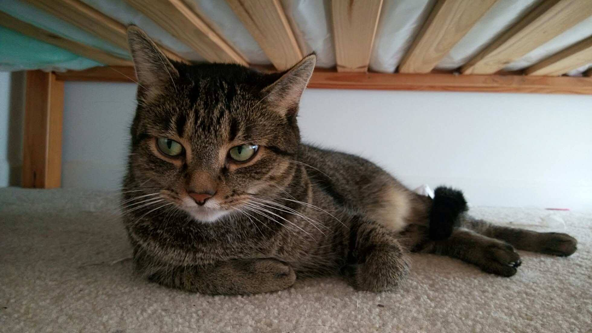
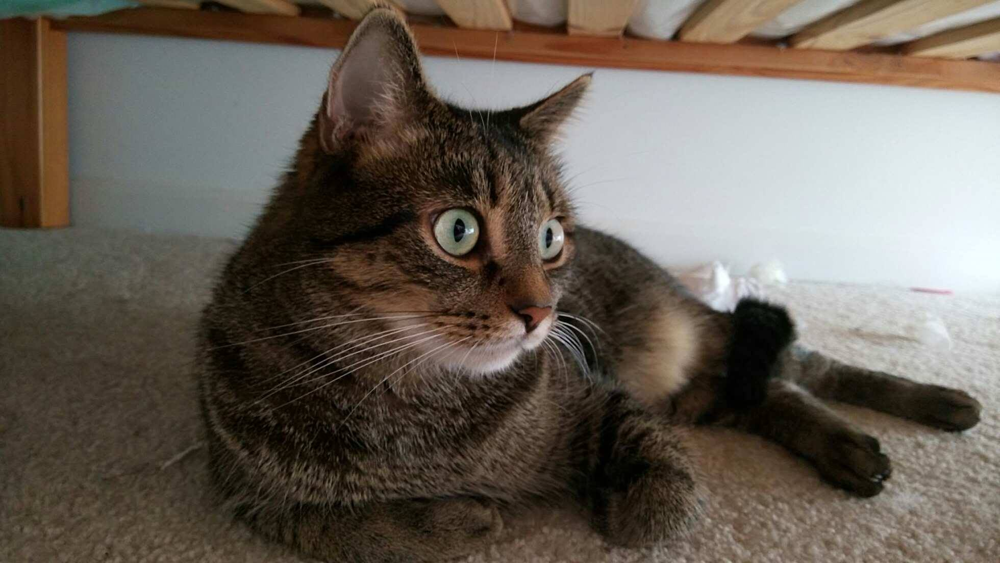
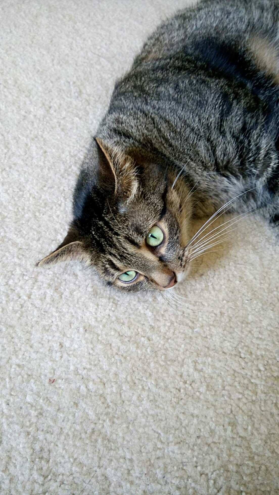

mreowmi: shorthair brown tabby. staring to the rightmreowmi staring intensely at cameramreowmi dazing off to the rightmreowmi lying on floor, looking sadHair: Tabby
Eyes: Blue-Green
Height: 27
17-18-18
Talents: begging for yogurt, eating yogurt, opening the fridge in search of yogurt